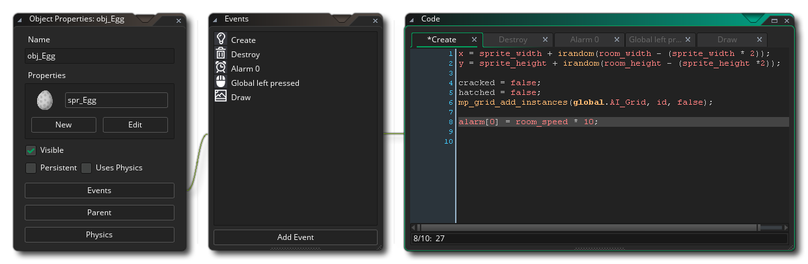

本手册的这一部分包含了解和使用 GameMaker Studio 2 脚本语言 GML 所需的所有信息。此语言中的代码可用于创建游戏，并在 物体编辑器 中添加到物体中， 通常当你选择创建新的 GameMaker 语言项目 时，它也可以与 DnD™（拖拽） 一起使用。用一个代码编辑器打开一个事件，你将看到物体的典型画面：每个事件在编辑器中都有自己的选项卡， 你可以随时添加、编辑或删除它们的代码 (有关事件的更多信息，请参见 物体事件)。代码本身必须具有基本结构， 并且可以包含资源索引、变量、函数、表达式、关键字等......。所有这些都在下面的章节中加以解释。如果你是编程新手或者从 DnD™ 切换过来的，建议你从 基本代码结构 页面开始，然后阅读在 GameMaker Studio 2 中每个部分的测试代码。